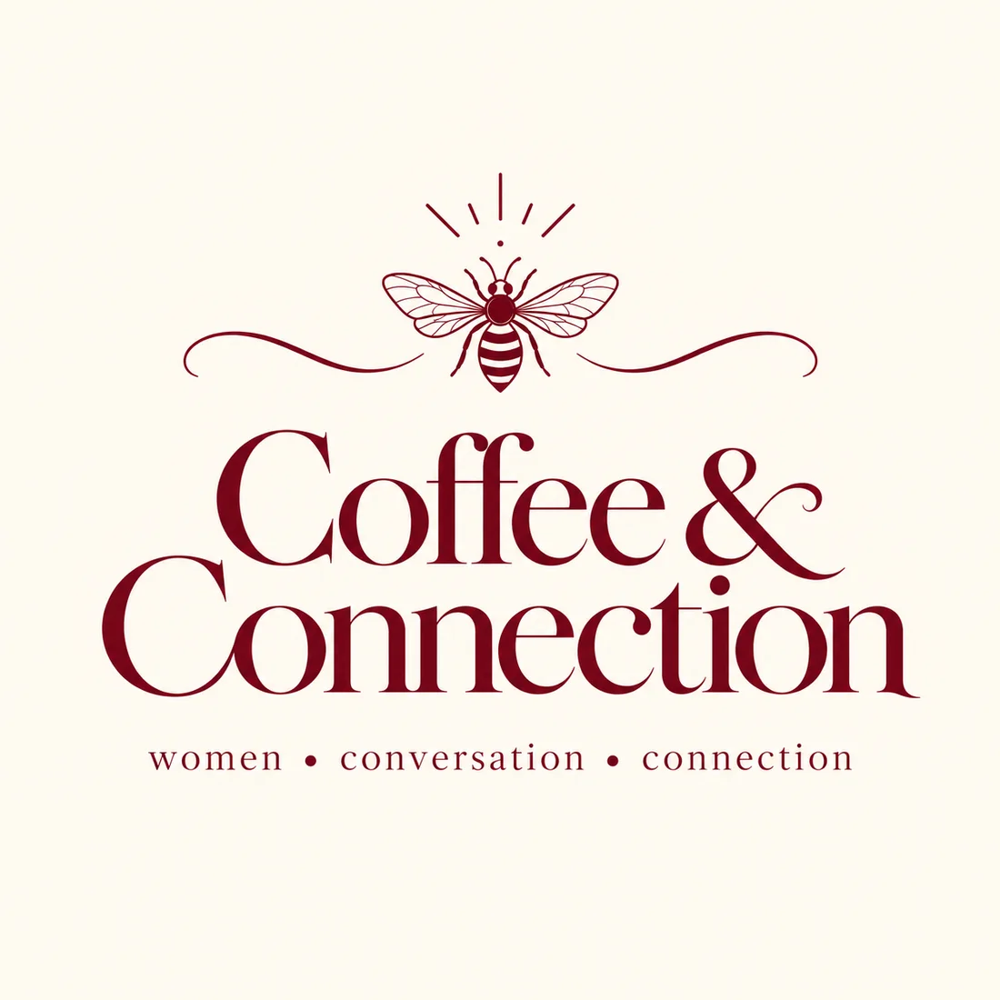

01 — SOCIAL GATHERINGS
Coffee & Connection
Come for the coffee. Stay for the connection.
An intimate afternoon to meet new women, explore beautiful cafés around Amsterdam and enjoy honest conversations in a relaxed setting. Come alone — you will not be the only one.
- 5 guests + host
- 90 minutes
- Free · your drinks are your own